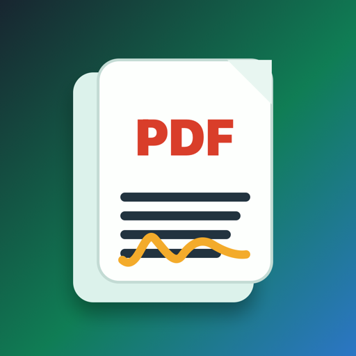

Company engineering
Commerce, loyalty, rewards, and growth at PayPal.
Senior consumer-platform work across shopping, engagement, and reward loops, with prior experience at ADP and Verizon Wireless.
LinkedInEngineering leader at PayPal. Author. Independent app developer.
I build local-first apps, 12 technical books, browser tools, and consumer commerce systems, combining PayPal-scale product experience with a broad independent software portfolio.
Independent books and apps are personal work and are not affiliated with PayPal.
About
My work centers on building systems that can handle real product pressure, real users, and real operational constraints.
Across PayPal, ADP, Verizon Wireless, independent apps, and books, I focus on commerce platforms, secure workflows, AI-native engineering, and practical local-first tools.
Brand
PayPal-scale consumer platform experience, 12 technical books, and a large portfolio of privacy-minded apps and browser tools all point to the same operating style.
The through line is practical product judgment: ship focused software, keep sensitive workflows local where possible, use AI as an engineering system, and turn complex operational problems into tools people can actually use.
Company engineering
Senior consumer-platform work across shopping, engagement, and reward loops, with prior experience at ADP and Verizon Wireless.
LinkedInIndependent software
Local-first utilities for money records, documents, small business operations, privacy, screen time, and proof workflows.
Apple developer pageAuthor work
Practical field guides for prompt engineering, AI-native engineering, coding agents, Codex, Gemini, and agent systems.
Amazon author pageSelected apps
I build practical software for records, privacy, documents, money, and field operations: tools with narrow jobs and clear user outcomes.
Featured app
A productivity app for finding receipts, billing records, purchase stories, refunds, returns, warranties, and proof inside everyday inbox chaos.
Convert bank statements into structured records.
Private command center for small business work.
Food permit readiness for opening-day paperwork.
Progress payment paperwork for contractors.

Private PDF utility for everyday document work.
Screen Time rules for focus and accountability.
Photo metadata repair and cleanup on device.
Local-first work proof, referrals, and reputation.
Litigation prep workspace for exhibits and timelines.
Books
The books are practical field guides for engineers using AI in serious software delivery, with a focus on review, testing, reliability, and production habits.
Agent systems
How to build AI agents that are reliable, observable, and worth trusting.
AI-native software delivery
How senior ICs and tech leads use modern AI tooling without losing rigor.
Complete portfolio
A complete portfolio of App Store apps, AI engineering and technical books, Chrome extensions, browser plugins, and browser tools from Krishna Pinnamaneni. The portfolio focuses on local-first utilities, AI-native engineering, financial records, PDFs, privacy, small business operations, field workflows, games, and browser-based productivity.
Finance
StatementSnap is a private bank statement converter for iPhone.
App StoreProductivity
PlanMeasure Free is a private construction takeoff studio for iPhone, iPad, and Mac.
App StorePhoto & Video
Passport Photo ID Maker helps you create a passport-style 2x2 photo on your iPhone without subscriptions, accounts, or uploads.
App StoreUtilities
CleanShare is a private metadata cleaner for photos, videos, and PDFs.
App StoreShopping
DealDesk is a native purchase planning workspace for iPhone and iPad.
App StoreGames
Block Blaster: Neon Rush is a fast arcade puzzle game built for quick, satisfying runs.
App StoreProductivity
ChatProof turns exported chat archives into readable local records.
App StoreProductivity
App Screen Time Lock helps you set clear daily boundaries for distracting apps.
App StoreProductivity
KaiInbox helps protect your money by turning receipts, renewals, refunds, packages, warranties, bills, and proof into clear, evidence-backed actions.
App StoreUtilities
Case Binder is a local-first litigation prep workspace for organizing exhibits, witnesses, transcript clips, trial timelines, and courtroom run-of-show steps.
App StoreProductivity
Conduit Bend Free is a private, on-device calculator for common EMT layout work.
App StoreBusiness
BusinessDesk is a private business command center for small business owners, freelancers, and contractors.
App StoreUtilities
Saha Invite is a private, offline-first app for serious dating and matrimony introductions.
App StoreProductivity
LocalScribe is a private transcription studio for audio and video files.
App StoreProductivity
DocDesk Free is a local document workspace for cleaning, reading, redacting, signing, compressing, and packaging documents on iPhone, iPad, and Mac.
App StoreProductivity
ProofPack is a private evidence PDF maker for screenshots, receipts, photos, PDFs, and notes.
App StorePhoto & Video
MetaFix EXIF Cleaner is a private photo metadata repair tool for iPhone.
App StoreGames
Gol-Skuish is a fast circular strategy game built around seven rings, six spokes, and tense capture chains.
App StoreEducation
CA Permit Practice 2026 helps California learner drivers prepare with focused practice tests and a parent-friendly driving log.
App StoreUtilities
LocalShield is a native Safari content blocker for Mac that keeps protection simple, transparent, and local.
App StoreGames
LoopLoot Rush is a fast one-finger arcade game about drawing the perfect loop.
App StoreGames
SnackBlade Rush is a fast arcade slicing game where every swipe matters.
App StoreUtilities
Offline Redactor helps you hide sensitive details before you send a screenshot, photo, or PDF.
App StoreGames
Tumba Rush is a fast one-finger arcade game inspired by classic street-play energy.
App StoreProductivity
Sanctuary Browser Guard helps you preview and protect sensitive prompts before sharing them from iPhone.
App StoreBusiness
Gutter Quote helps small gutter contractors build itemized customer quotes from the field.
App StoreGames
Lagori Rush turns the classic Seven Stones street game into a fast iPhone arcade challenge.
App StoreProductivity
DepositDesk helps renters prepare a clean local evidence packet before a security deposit dispute happens.
App StoreBusiness
Pay Packet helps contractors and small construction teams prepare progress payment paperwork without subscriptions or project caps.
App StoreUtilities
RoutePilot gives users a clean local workspace for network routing rules.
App StoreGames
Crash Cart: Neon Market Game is a one-thumb arcade route-contract chase built around panic, near-misses, and comic chaos.
App StoreGames
Monsoon Tag Royale is a fast rooftop runner built around chase, timing, and pressure.
App StoreFinance
1099Ready is a free, local-first tax prep tracker for gig workers, freelancers, contractors, creators, rideshare drivers, delivery drivers, and small side businesses.
App StoreBusiness
ProofNet is a local-first professional network for proof, referrals, and work reputation.
App StoreUtilities
SpacePilot is a local-first Mac storage command center for finding what is actually worth cleaning up.
App StorePhoto & Video
PixelBatch helps you resize, convert, and compress groups of images without uploading files.
App StoreNews
TechieNews Now is a clean reader for people who want a fast view of current technology coverage.
App StoreProductivity
LockBuddy helps you protect your own Screen Time rules when willpower is not enough.
App StoreBusiness
ImportGuard helps operators clean CSV imports before they touch a CRM, spreadsheet, or database.
App StoreProductivity
KaiInbox Local is an email opportunity inbox for everyday money moments on Mac.
App StoreProductivity
PaperLens OCR turns scanned PDFs and images into searchable documents on your Mac.
App StoreProductivity
LocalPDF Desk is a private PDF utility for everyday document work.
App StoreBusiness
Consign Payout Desk solves one specific back-office problem for consignment and resale shops: turning point-of-sale CSV sales exports into clear monthly consignor payout reports.
App StoreGames
CrunchStack is a fast, colorful tap game built for instant competition.
App StoreUtilities
QuitProof helps gym members organize a clear cancellation request when a gym makes cancellation unfairly difficult.
App StoreBusiness
Opportunity Radar turns public feeds into business signals your team can act on.
App StoreProductivity
PDF Editor is a local PDF workspace for everyday document work.
App StoreFinance
ReceiptRows converts receipts into clean spreadsheet exports.
App StoreGames
AeroRush Flight Sim is a flight simulation game built to make real pilot habits easier to understand.
App StoreBusiness
PermitPilot helps small food businesses organize the paperwork needed before opening day.
App StoreUtilities
DupeSift helps you review imported files and find exact duplicates on iPhone and iPad.
App StoreAI governance
An engineering leader's guide to review, traceability, testing, and control for AI-generated software.
AmazonCoding agents
A guide to building AI-ready repositories, specs, tests, guardrails, and production workflows for Codex, Claude Code, Cursor, Copilot, Windsurf, and MCP-based tools.
AmazonAI agents
How to build AI agents that are reliable, observable, and worth trusting.
AmazonAI-native software delivery
A field guide for senior engineers and tech leads adopting AI tools without losing rigor.
AmazonOpenAI Codex
A practical developer guide for building, debugging, refactoring, reviewing, testing, automating, and shipping with Codex.
AmazonClaude and Claude Code
A practical guide for software engineers, technical leads, and builders using Claude for coding, review, debugging, refactoring, prompt design, and production workflows.
AmazonGoogle Gemini
A developer guide for using Gemini in planning, coding, debugging, refactoring, and production software workflows.
AmazonPrompt engineering
A practical field guide from clear instructions to production systems.
AmazonAI agents and business systems
A short book on how AI agents can reshape company operating models and software work.
AmazonTechnical interviewing
A complete playbook for coding interviews, system design rounds, behavioral interviews, and offer-winning execution.
AmazoniOS development
A practical handbook for building exceptional iOS apps in the AI era.
AmazonAndroid development
A practical handbook for building exceptional Android apps in the AI era.
AmazonBrowser work includes Chrome extensions, Chrome Web Store packages, Safari/browser guard tooling, local browser apps, prompt-protection tools, lead follow-up tools, permit-readiness tools, and browser games.
Chrome app / extension
Pilot a fast 3D aircraft through rings and hazards in a local arcade flight simulator.
Chrome app / extension
Organize dispute facts, evidence, deadlines, and next actions in a local workspace.
Chrome app / extension
Track local owner training metrics, project status, and operating priorities in one dashboard.
Chrome app / extension
Build simple service quotes locally with saved line items, totals, and owner-ready pricing.
Chrome app / extension
Play a local fast-action arcade challenge with saved best scores and responsive controls.
Chrome app / extension
Review and clean CSV-style contact import data locally before it reaches another system.
Chrome app / extension
Review a local document operations workspace for bookkeeping and CAS teams.
Chrome app / extension
Run local PDF desk utilities in Chrome with bundled browser-side PDF tooling.
Chrome app / extension
Play a local monsoon-themed arcade runner with browser-saved results.
Chrome app / extension
Organize a local gym cancellation packet, evidence trail, and follow-up plan.
Chrome app / extension
Stack snacks in a fast local arcade challenge with browser-saved high scores.
Browser extension
Break the seven-stone stack, rebuild under pressure, and dodge moving defenders in a fast street-game challenge.
Browser extension
Track customer leads that need a reply before quotes go cold.
Browser extension
Food-business permit and compliance readiness board for small operators.
Browser extension
Preview, redact, and block sensitive prompts on ChatGPT and Gemini before they leave the browser.
Highlights
Board and advisory focus
I am interested in selective board, advisory, and technical diligence conversations with companies building in AI-native engineering, developer tools, consumer commerce, fintech, productivity software, privacy-preserving workflows, and local-first products. Relevant roles include advisory board member, independent board member, technical advisor, product advisor, and AI strategy advisor.
Governance, engineering workflow design, coding agents, review systems, and production AI habits.
Focused product wedges, portfolio selection, App Store product strategy, pricing, retention, and launch cadence.
Local-first architecture, sensitive data workflows, user-owned records, evidence packets, and privacy-sensitive product design.
Commerce, loyalty, rewards, engagement loops, shopping surfaces, and growth systems at operating scale.
AI models and tools
My writing and software work covers OpenAI Codex, ChatGPT, Google Gemini, Claude Code, Cursor, GitHub Copilot, Windsurf, MCP, prompt engineering, coding agents, AI agents, agent engineering in production, and practical AI adoption inside real software teams.
Developer workflows for planning, editing, testing, reviewing, refactoring, and shipping with agentic coding tools.
Practical AI workflows for planning, analysis, software delivery, and model-assisted engineering judgment.
Prompt contracts, context quality, verification discipline, review systems, and production AI operating habits.
Prompt-protection tools, browser plugins, local-first workflows, and privacy-aware AI usage before sensitive data leaves the device.
FAQ
Krishna Pinnamaneni is a PayPal engineering leader, local-first app developer, AI engineering author, browser-tool builder, and board/advisory candidate focused on commerce, privacy, AI-native engineering, and product strategy.
PayPal-scale consumer platform work, a large App Store app portfolio, 12 technical books, browser extensions and plugins, and local-first software for records, privacy, PDFs, money, field workflows, and small business operations.
OpenAI Codex, ChatGPT, Google Gemini, Claude Code, Cursor, GitHub Copilot, Windsurf, MCP, coding agents, AI agents, prompt engineering, AI-native engineering, and production AI workflows.
The App Store portfolio includes 51 apps, including KaiInbox, StatementSnap, BusinessDesk, LocalPDF Desk, ProofNet, LockBuddy, MetaFix, PermitPilot, Pay Packet, Case Binder, and other local-first utilities, business tools, finance tools, privacy tools, and games.
The technical book catalog covers AI governance, context engineering for coding agents, AI-native engineering, agent engineering in production, OpenAI Codex, Claude, Google Gemini, prompt engineering, autonomous companies, technical interviewing, and mobile developer workflows.
Yes. Browser work includes Chrome extensions, Chrome apps, browser plugins, prompt-protection tools, lead follow-up tools, permit-readiness tools, PDF tools, and browser games.
I am interested in selective board, advisory, technical diligence, product advisor, and AI strategy advisor conversations with companies building in AI-native engineering, developer tools, consumer commerce, fintech, privacy-preserving workflows, and local-first products.
Use the Apps, Books & Plugins catalog page, Apple Developer profile, Amazon author catalog, LinkedIn profile, and patent record linked below. Structured catalog files are also available for reference.
Links
Contact
LinkedIn has professional background, Apple lists the apps, and Amazon has the book catalog.